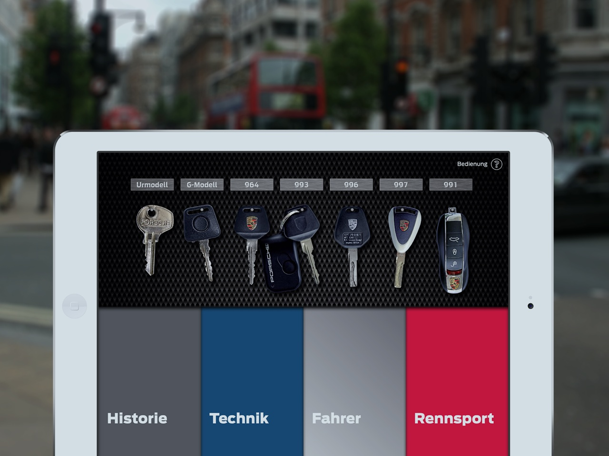
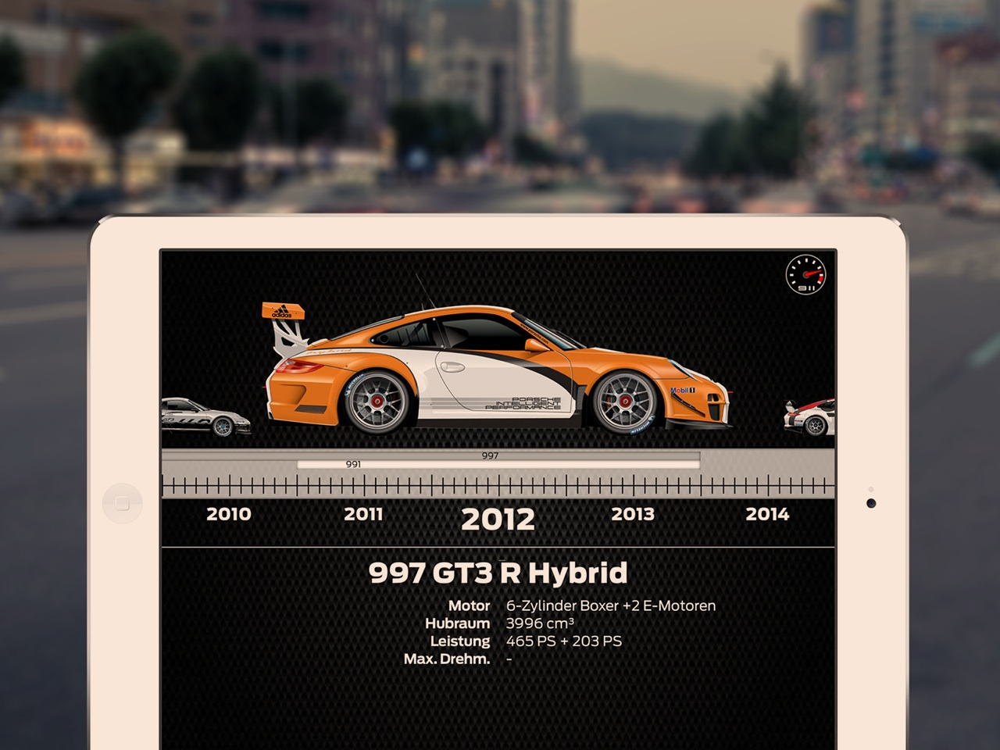
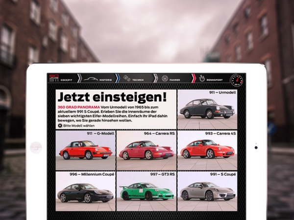

The app reached the top 5 list of paid apps in Germany. This success was possibly due to the close collaboration between Relevance, Motor Presse Stuttgart and us – and due to the high quality content and editing.
We developed a quiz for 911 excperts and two interactive timelines with gesture control, that show every 911 model since the 60s to today – with pictures and technical data. The underlying technology is HTML5 optimized for touch devices and Retina displays.
We concepted and layoutet the content together with the designers of our client. In a subsequent workshop we enabled Relevance to create and submit Adobe DPS apps to the App Store themselves.
{% include badge.html store="apple" %}
{% for cta in site.ctas %} {% if cta.lang == page.lang %} {% if cta.id == 'about-project' %} {% include cta-plain.html %} {% endif %} {% endif %} {% endfor %}